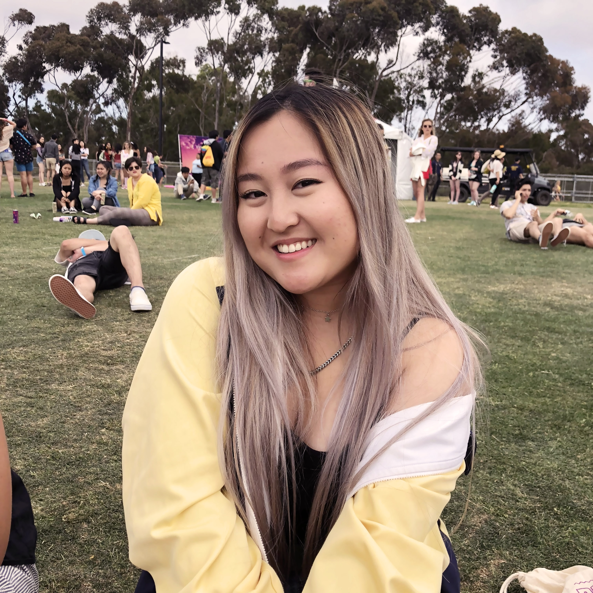

I'm Nancy. I design for people, with people in mind.
Class of 2020 @ UCSD, pursuing a B.S. Degree in Human Computer Interaction.
Hi! I am currently the Graphic Designer for UCSD's Health Promotion Services. As a creator, I love to utilize design thinking in order to provide a gateway into welcoming experiences. You can check out my resume here.
Other things I love: playing Sims, watercolor, and my pup, Coco.